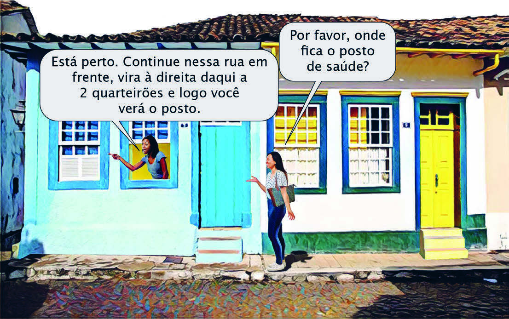
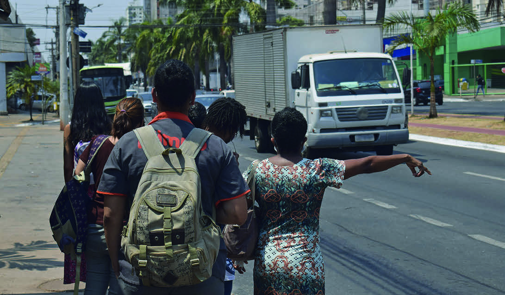

NOS EXEMPLOS A SEGUIR, A PADARIA E A CASA LOTÉRICA SÃO TOMADAS COMO PONTOS DE REFERÊNCIA:
“AMANHÃ NOS ENCONTRAMOS NO PONTO DE ÔNIBUS EM FRENTE À PADARIA.”
“EU TRABALHO PERTO DE UMA CASA LOTÉRICA.”
EM ALGUMAS SITUAÇÕES, NOSSO CORPO TAMBÉM SERVE COMO PONTO DE REFERÊNCIA.
OBSERVE.

PARA ESSA MULHER CHEGAR AO POSTO DE SAÚDE, ELA DEVE VIRAR À DIREITA, EM RELAÇÃO AO PRÓPRIO CORPO.
ISSO SIGNIFICA QUE O CORPO DELA FOI TOMADO COMO REFERÊNCIA PARA DETERMINAR A DIREÇÃO EM QUE ELA DEVE VIRAR.
NA CENA A SEGUIR, A MULHER USA O BRAÇO DIREITO PARA ACENAR PARA O ÔNIBUS.

O ATO DE LEVANTAR O BRAÇO INDICA AO MOTORISTA QUE ELE DEVE PARAR O ÔNIBUS.
Daniel Cymbalista/Pulsar Imagens
Com as próximas atividades do tópico “Localização”, que se inicia na página anterior, objetivamos que os estudantes explorem situações cotidianas e reflitam sobre quais são os referenciais que usamos para determinar trajetos e localizações.
Faça a leitura compartilhada do texto em voz alta, permitindo aos estudantes acompanhar visualmente o texto no Livro do Estudante.
Promova uma conversa dirigida sobre os conceitos apresentados no texto, como perto e longe, pontos de referência e orientação espacial.
Incentive uma reflexão relacionando os conceitos abordados com situações do cotidiano.
Reforce a importância da compreensão da localização e da orientação espacial.
SUGESTÃO PARA O PROFESSOR
Sugerimos a leitura do texto Valorizando a diferença e o crescimento: uma perspectiva do Youcubed sobre a Educação Inclusiva (disponível em: https://www.youcubed.org/wp-content/uploads/2020/02/Valorizando-a-diferen%C3%A7a-e-o-crescimento-uma-perspectiva-do-Youcubed-sobre-a-Educa%C3%A7%C3%A3o-Inclusiva-.pdf, acesso em: 21 maio 2024).
O artigo tem como objetivos relatar intervenções cerebrais que lançam estudantes encaminhados à educação inclusiva em jornadas totalmente diferentes e mostrar os impactos dessas intervenções sobre o cérebro e o aprendizado.
Além de discutir sobre as maneiras nas quais consideramos a diferença na aprendizagem matemática.